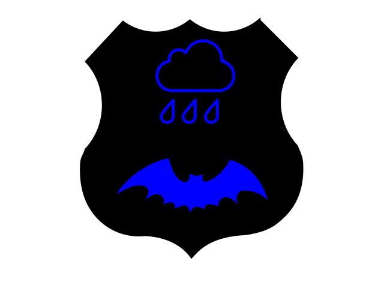
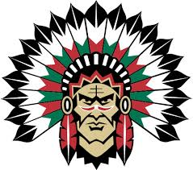

Mitt första blogginlägg!
På denna bloggen kommer jag att skriva lite om de laborationer jag gör och även publicera material som jag producerar. Kommer jag på något mer kul att skriva här så kommer jag göra det också :)
På denna bloggen kommer jag att skriva lite om de laborationer jag gör och även publicera material som jag producerar. Kommer jag på något mer kul att skriva här så kommer jag göra det också :)
Här har jag skapat en .svg fil med hjälp av svg-edit. Det är inte den snyggaste bilden men det fanns hjälp att få i programmet som tur var :)
Här kommer en video för labbuppgift 1.7. Det var svårare än jag hade räknat med att hitta en bra .mp4 fil som man fick lov att använda som man ville och som inte var för stor.Källa
Nu har det gått några veckor på programmet och jag är väldigt nöjd hittills! :) C# är otroligt roligt och även om det kan vara svårt ibland så är känslan av att komma vidare och lösa problemet värt det. Jag tycker tempot på utbildningen är lagom även om jag just nu känner lite stress då jag haft lite otur med saker som dykt upp och tagit tid från studierna, men det är så det är att vara förälder och skulle inte byta bort det mot allt i världen! CSS biten är svårast tycker jag då jag har väldigt svårt att "snygga" till det och lägger för mycket tid på att göra det sämre oftast... Men med övning kommer förhoppningsvis färdighet. Här kommer en bild till bloggen för att uppfylla kurskravet.  Jag är ett stort Frölundafan så kunde inte motstå att lägga upp en FHC bild på portalen, det känns helt enkelt trevligare att titta in här medan jag arbetar på portalen ;)
Jag har använt mig av en klass "right" för min Frölundabild och en "left" klass för min video. Jag kunde inte låta bli att lägga in W3 CSS-ikonen heller när jag lyckades klara validatorn utan felmeddelanden :)